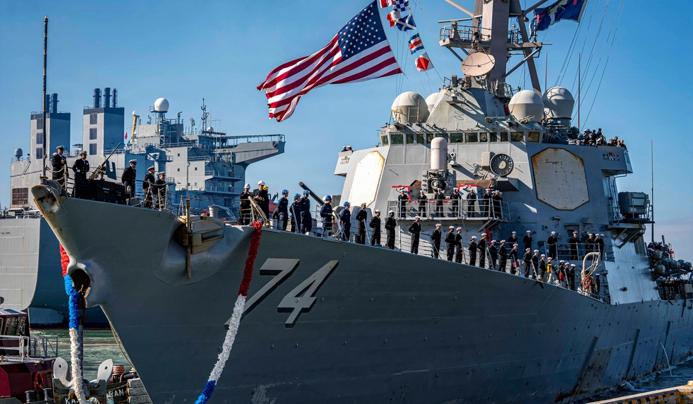

USS McFaul is home in Norfolk after an 11-month deployment
Naval Surface Force Atlantic said Friday that the Arleigh Burke-class destroyer USS McFaul returned to Naval Station Norfolk, ending an 11-month deployment to the U.S. 5th and 6th Fleet. The ship left Norfolk on Nov. 25, 2025. During the deployment it used the Aegis Combat System for anti-air warfare, surface warfare, and naval surface fire support, and operated with the Abraham Lincoln, George H.W. Bush, and George Washington carrier strike groups during Operation Epic Fury. Commanding officer Cmdr. Adam Samson said the crew protected the strike group under pressure. The ship is named for Engineman Chief Donald L. McFaul, a SEAL killed in Operation Just Cause in 1989. The official still, taken and posted today, shows sailors manning the rails at the homecoming.